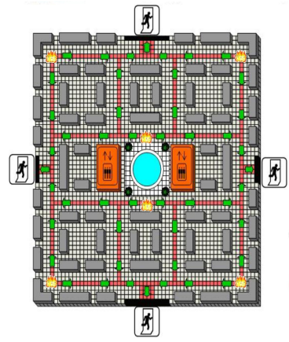
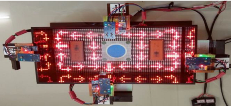
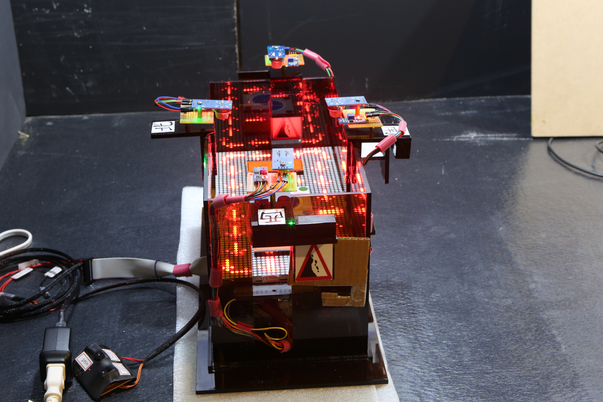
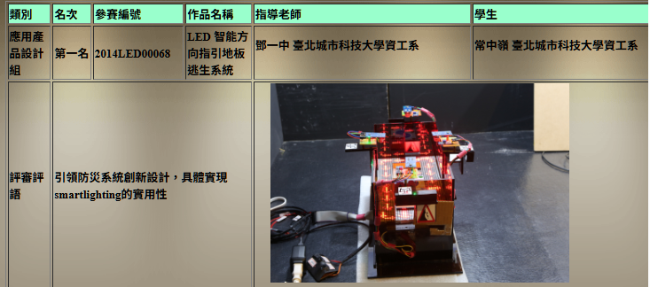
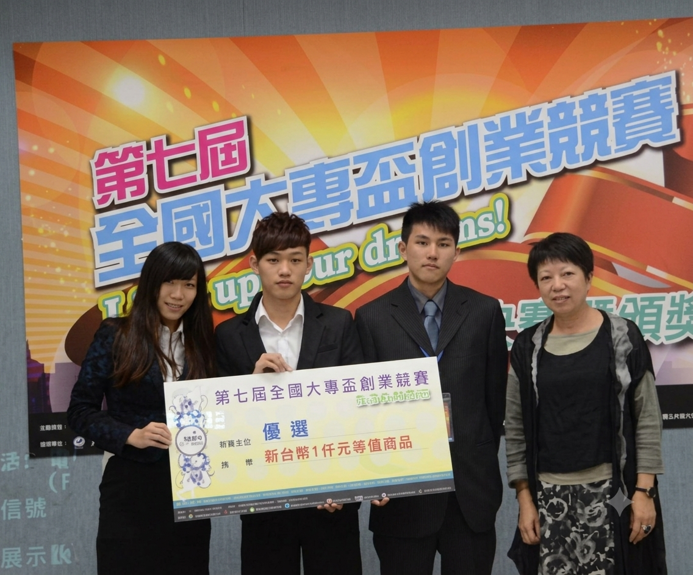
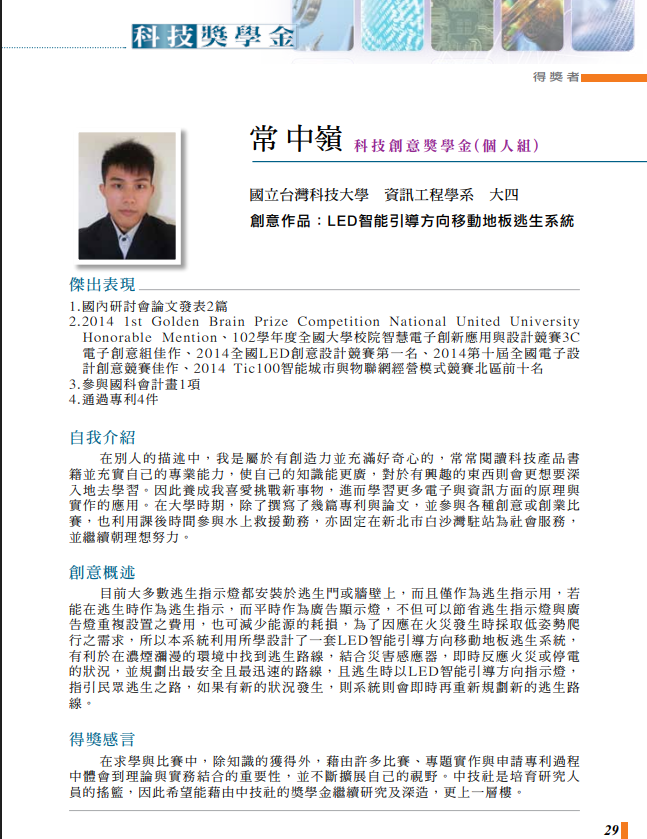
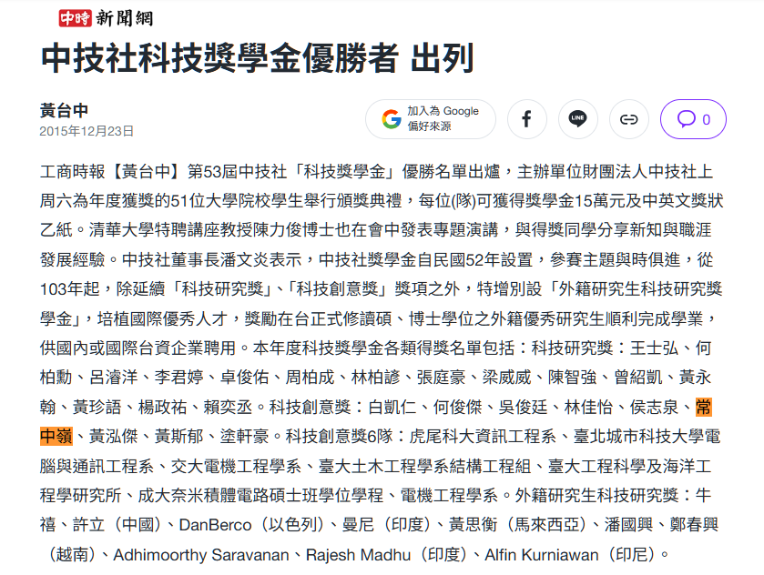

Professional Summary
NTU CSIE M.S. and Full-Stack Engineer with experience spanning hardware-software co-design and web development.
My background blends academic innovation—including a national award-winning, C-based intelligent escape system and an IEEE publication on Reinforcement Learning—with solid professional experience.
I specialize in full-stack web systems (.NET/Vue) and system analysis (SA), translating complex workflows into efficient digital solutions.
Core Expertise
Firmware Engineering
C, Arduino, UART, Serial Protocols
Backend Development
.NET (C# / .NET Core), PHP (Laravel), Python (Django), C
Frontend & Mobile
Vue.js (RWD), Flutter, Android (Java), UWP
Database & DevOps
MSSQL, MySQL, Enterprise Virtualization (vSphere / Horizon VDI)
Projects Showcase
meetravel
Interactive open web framework designed for social travel coordination and responsive UI.
Odoo-Tutorial-Demo
Forked practice environment exploring enterprise Odoo ERP module customizations.
Ethereum-Token
Smart contract deployment module implementing customized asset issuance standards.
vue3
Advanced enterprise frontend scaffold optimized for scalable single-page applications.
Drone.Management
Autonomous drone fleet orchestration platform featuring real-time telemetry streaming.
APPRI
Custom web application interface tailor-made for automated reporting metrics aggregation.
BreatheIN
High-performance embedded core firmware optimized for digital health signal filtering.
Flutter_Blue
Custom cross-platform Bluetooth Low Energy wrapper engineered for stable connections.
Flutter_Bluetooth_Serial
Serial communication extension for classic Bluetooth continuous hardware logging.
BoardGame
Object-oriented modular simulation engine built to model state machines and rules.
Take_Out_Sell
Backend infrastructure demonstration featuring transaction routing and relational data.
Master-s-degree
Academic core repository consolidating statistical models and image segmentation.
Javier
Personal layout configuration archive and UX aesthetic component prototyping space.
Experience
Institute for Information Industry (III)
Led system analysis and .NET Core/Vue.js architecture design for a new performance management system. Resolved cross-departmental edge cases, reducing communication and maintenance overhead by 40%.
View Details
• Implemented decoupled MVC architecture and high-concurrency Stored Procedures for large-scale data matching and core CRUD business logic.
• Developed end-to-end digital approval workflow, digitizing paper-based processes.
• Diagnosed logical flaws in legacy systems and ensured a seamless upgrade with zero major defects.
Freelancer
Designed modern GUIs and hardware control logic. Developed an "Online English Certification Website" and travel agency official site, replacing legacy systems and slashing client operational costs by 80%.
View Details
• Used Python/UART for low-latency hardware command transmission.
• Developed Vue/Laravel/MySQL decoupled MVC architecture with automated grading and reservation systems.
• Upgraded security protocols for robust data protection.
China Broadcasting Corporation (BCC)
Maintained and optimized large-scale .NET/MSSQL systems. Integrated third-party payment, electronic invoicing, and enforced cybersecurity controls via VPNs/firewalls.
View Details
• Led system analysis (SA) and requirements gathering for a new e-commerce platform.
• Defined core business logic and database migration strategies for architectural upgrades.
Taiwan Data Science Co., Ltd
Specialized in AI/IoT, Full-Stack, and Data Engineering. Honored with the Global Chinese Sustainable Journalism Award for dynamic workflow planning.
Project Highlights
• AI & Payment: Led real-time anti-fraud system using DDPG reinforcement learning and LSTM-CNN trajectory reconstruction.
• Medical IoT: Flutter-based mobile medical app with BLE-integrated hardware for COPD analysis.
• Full-Stack: Developed nutrition CRM (Vue/.NET Core) and real-time ordering platforms (Laravel).
• Data Engineering: Built .NET Core APIs for Yunlin "New Coin" project and Python/Django pipelines for large-scale passenger flow processing.
Trend Micro Taiwan
Developed Python-based automated inspection tools and conducted IoT vulnerability research. Optimized high-concurrency wireless networks for 150,000+ devices.
View Details
• Identified security flaws in IoT devices and formulated mitigation strategies.
• Tuned low-latency services to ensure high availability in high-density environments.
Education
National Taiwan University of Science and Technology
GPA: 3.97 | Rank 2/52
Awards & Accomplishments
The LED floor-based evacuation system is an innovative, intelligent guidance mechanism for emergency egress. When thick smoke obscures visibility and forces people to crawl close to the ground, the system utilizes floor-embedded LED lights to provide real-time, dynamic directional guidance, preventing people from losing their way amidst the panic.
System Architecture Diagram


This Intelligent LED-Guided Directional Moving Floor Escape System won first place in its very first competition;
I am grateful for my teacher's guidance and my father's support.
Award-winning photo



"Immediate Rescue" (Rescue right on the bowl) is a smart toilet system that uses fingerprint recognition on the flush button to accurately identify users and seamlessly monitor physiological data from urine and stool, blood pressure, and bathroom habits. The system not only automatically compiles health metrics for medical reference but also sends instant alerts to emergency contacts when it detects abnormal bathroom usage or inactivity, providing 24/7 proactive home care for those living alone.
Award-winning photo

Through a wealth of competitions and project-based experience, I have deeply embraced the value of integrating theory with practice. The process of filing for patents has further honed my technical expertise and broadened my innovative perspective. Receiving recognition from the CTCI Foundation has transformed this dedication to technological application into a profound commitment to 'Technological Innovation and Social Sustainability.' I am dedicated to leveraging R&D to give back to society, ensuring that innovation serves as a key driver for sustainable development.
Science and Technology Scholarship
Award-winning photo


Publications
Reinforcement learning for improving the accuracy of PM2.5 pollution forecast under the neural network framework
IEEE Access · 2019 · 24 Citations
Improving the accuracy Rate of PM2.5 Pollution Forecast Using Q-learning training Time-series Model
Graduate Institute of Networking and Multimedia, National Taiwan University · 2018
A Tutorial on Using the Sedumi to Solve Optimization Problems Part 1 LP and SCOP Problems
2013 Symposium on Engineering and Technology Applications · 2013 · 205-208
Minimax Design of Two-Dimensional Fan Type FIR Digital Filters Using an Interior-Point Algorithm
2013 Symposium on Engineering and Technology Applications · 2013